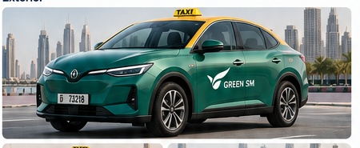
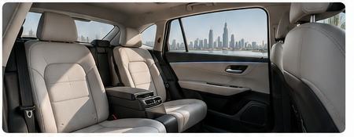

Green SM Go
Premium comfort.
Everyday affordability.
For everyday premium electric taxi journeys.

ExteriorGreen SM body, UAE taxi roof colour coding, taxi ID, operator branding and integrated LED roof sign.
ClimateHigh-capacity cooling, rear vents, ventilated seating and UV/heat-reducing glass.
CabinRear legroom, armrest, privacy glass, USB-C, wireless charging, phone holder and complimentary water.
Roof signAVAILABLE / متاح · BOOKED / محجوز · ON TRIP / في رحلة